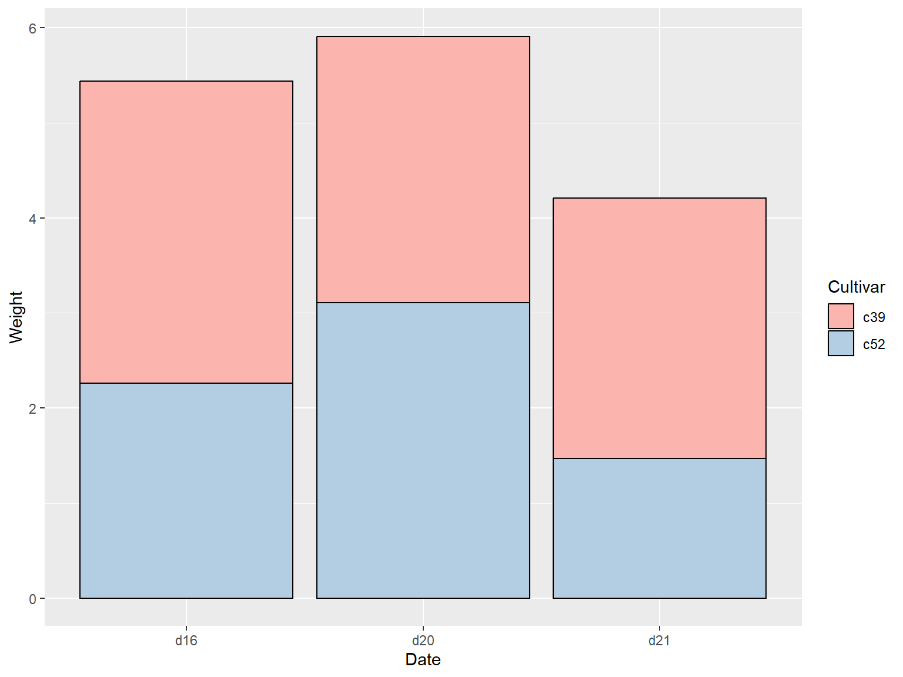
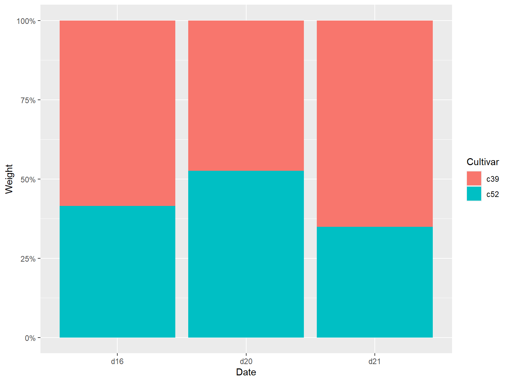
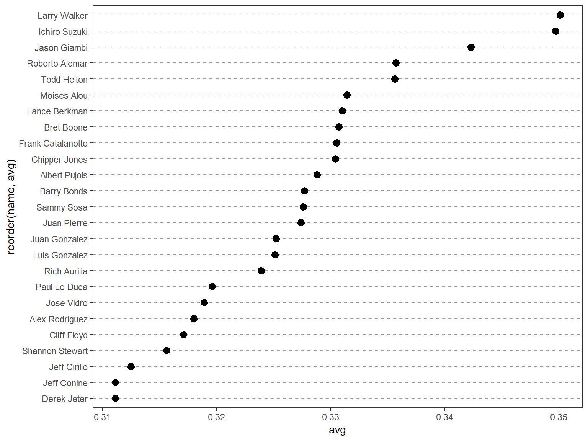
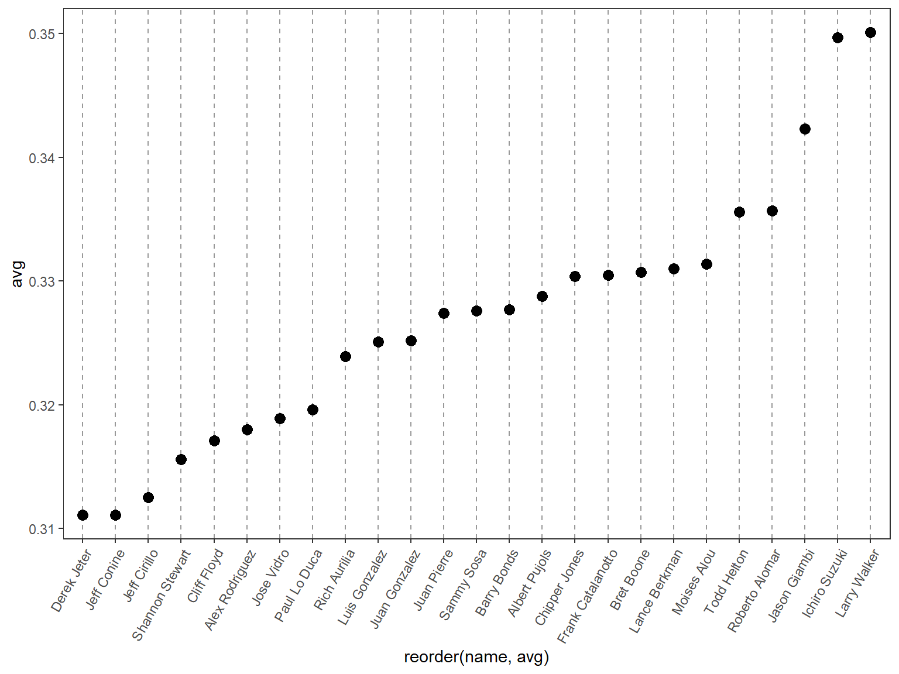

# Convert Time to a discrete (categorical) variable with factor()ggplot(BOD, aes(x =factor(Time), y = demand)) +geom_col()
1.3 调整配色
在默认的设置下，条形图的填充色为深灰色且条形图没有边框线，用户可以通过调整 fill 参数来改变填充色和调整 colour/color 参数为条形图添加边框线。
将填充色设置为浅蓝色，边框现的颜色设置为黑色：
代码
library(gcookbook) # Load gcookbook for the pg_mean data setlibrary(ggplot2)ggplot(pg_mean, aes(x = group, y = weight)) +geom_col(fill ="lightblue",colour ="black")
2 绘制簇状条形图
通过将分类变量映射到 fill 参数上，运行命令 geom_col(position = "dodge") 实现。
代码
library(gcookbook) # Load gcookbook for the cabbage_exp data set# check datasetcabbage_exp
# load ggplot2library(ggplot2)ggplot(ce, aes(x = Date, y = Weight, fill = Cultivar)) +geom_col(position ="dodge", colour ="black") +scale_fill_brewer(palette ="Pastel1")
3 绘制频数条形图
3.1 使用 geom_bar() 函数
使用 geom_bar() 函数，同时不映射任何变量到y参数
代码
# Equivalent to using geom_bar(stat = "bin")ggplot(diamonds, aes(x = cut)) +geom_bar()
3.2 条形图着色
代码
library(gcookbook) # Load gcookbook for the uspopchange data setlibrary(dplyr)# select top 10 state with population growthupc <- uspopchange %>%arrange(desc(Change)) %>%slice(1:10)upc
State Abb Region Change
1 Nevada NV West 35.1
2 Arizona AZ West 24.6
3 Utah UT West 23.8
4 Idaho ID West 21.1
5 Texas TX South 20.6
6 North Carolina NC South 18.5
7 Georgia GA South 18.3
8 Florida FL South 17.6
9 Colorado CO West 16.9
10 South Carolina SC South 15.3
将 Region 映射到 fill 是上兵绘制条形图：
代码
ggplot(upc, aes(x = Abb, y = Change, fill = Region)) +geom_col()
3.2.1 设定图形颜色
借助函数 scale_fill_brewer() or scale_fill_manual() 重新设定图形颜色：
代码
ggplot(upc, aes(x =reorder(Abb, Change), y = Change, fill = Region)) +geom_col(colour ="black") +scale_fill_manual(values =c("#669933", "#FFCC66")) +xlab("State")
3.2.2 注意
颜色的映射是在 aes() 内部完成的，但是颜色的设定是在 aes() 外部完成的。
4 对正负条形图分别着色
首先创建一个取值正负性进行标识的变量 pos :
代码
library(gcookbook) # Load gcookbook for the climate data setlibrary(dplyr)climate_sub <- climate %>%filter(Source =="Berkeley"& Year >=1900) %>%mutate(pos = Anomaly10y >=0)# 展示前10行print("前10行数据：")
[1] "前10行数据："
代码
head(climate_sub, 10)
Source Year Anomaly1y Anomaly5y Anomaly10y Unc10y pos
1 Berkeley 1900 NA NA -0.171 0.108 FALSE
2 Berkeley 1901 NA NA -0.162 0.109 FALSE
3 Berkeley 1902 NA NA -0.177 0.108 FALSE
4 Berkeley 1903 NA NA -0.199 0.104 FALSE
5 Berkeley 1904 NA NA -0.223 0.105 FALSE
6 Berkeley 1905 NA NA -0.241 0.107 FALSE
7 Berkeley 1906 NA NA -0.294 0.106 FALSE
8 Berkeley 1907 NA NA -0.312 0.105 FALSE
9 Berkeley 1908 NA NA -0.328 0.103 FALSE
10 Berkeley 1909 NA NA -0.281 0.101 FALSE
4.1pos 映射到 fill 中
代码
library(ggplot2)ggplot(climate_sub, aes(x = Year, y = Anomaly10y, fill = pos)) +geom_col(position ="identity")
4.1.1 注意
这里条形图的参数设定为 position = "identity" ，可以避免系统因对负值绘制堆积条形而发出的警告信息。
ggplot(cabbage_exp, aes(x = Date, y = Weight, fill = Cultivar)) +geom_col(width =0.5, position ="dodge")
5.4.2 具有条形间距的簇状条形图
代码
ggplot(cabbage_exp, aes(x = Date, y = Weight, fill = Cultivar)) +geom_col(width =0.5, position =position_dodge(0.7))
5.4.3position 语法
以下四条命令是等价的：
geom_bar(position ="dodge")geom_bar(width =0.9, position =position_dodge())geom_bar(position =position_dodge(0.9))geom_bar(width =0.9, position =position_dodge(width=0.9))
6 绘制堆积条形图
6.1 使用 geom_bar() 函数
使用 geom_bar() 函数，并映射一个变量给填充色参数 fill 即可，该命令会将 Date 对应到 x 轴上，并以 Cultivar 作为填充色
代码
library(gcookbook) # Load gcookbook for the cabbage_exp data setlibrary(ggplot2)ggplot(cabbage_exp, aes(x = Date, y = Weight, fill = Cultivar)) +geom_col()
library(gcookbook) # Load gcookbook for the cabbage_exp data setlibrary(ggplot2)ggplot(cabbage_exp, aes(x = Date, y = Weight, fill = Cultivar)) +geom_col(position =position_stack(reverse =TRUE)) +guides(fill =guide_legend(reverse =TRUE))
library(gcookbook) # Load gcookbook for the cabbage_exp data setlibrary(ggplot2)ggplot(cabbage_exp, aes(x = Date, y = Weight, fill = Cultivar)) +geom_col(colour ="black") +scale_fill_brewer(palette ="Pastel1")

7 绘制百分比堆积条形图
7.1 使用 geom_col(position = "fill") 实现
使用 geom_col(position = "fill") 可以将y的值调整为0到1之间。
代码
library(gcookbook) # Load gcookbook for the cabbage_exp data setggplot(cabbage_exp, aes(x = Date, y = Weight, fill = Cultivar)) +geom_col(position ="fill")
7.1.1 让标签以百分比的形式展示
代码
ggplot(cabbage_exp, aes(x = Date, y = Weight, fill = Cultivar)) +geom_col(position ="fill") +scale_y_continuous(labels = scales::percent)

7.2 更换调色板并添加边框线
代码
ggplot(cabbage_exp, aes(x = Date, y = Weight, fill = Cultivar)) +geom_col(colour ="black", position ="fill") +scale_y_continuous(labels = scales::percent) +scale_fill_brewer(palette ="Pastel1")
library(dplyr)# Sort by the Date and Cultivar columnsce <- cabbage_exp %>%arrange(Date, rev(Cultivar))# Get the cumulative sumce <- ce %>%group_by(Date) %>%mutate(label_y =cumsum(Weight))ce
library(gcookbook) # Load gcookbook for the tophitters2001 data settophit <- tophitters2001[1:25, ] # Take the top 25 from the tophitters data setggplot(tophit, aes(x = avg, y = name)) +geom_point()
library(gcookbook) # Load gcookbook for the tophitters2001 data settophit <- tophitters2001[1:25, ] # Take the top 25 from the tophitters data setlibrary(ggplot2)ggplot(tophit, aes(x = avg, y =reorder(name, avg))) +geom_point(size =3) +# Use a larger dottheme_bw() +theme(panel.grid.major.x =element_blank(),panel.grid.minor.x =element_blank(),panel.grid.major.y =element_line(colour ="grey60", linetype ="dashed") )

9.3 旋转点图
将点图的x轴和y轴互换，互换后，x轴对应名称，y轴对应数值，同时将标签旋转60°。
代码
ggplot(tophit, aes(x =reorder(name, avg), y = avg)) +geom_point(size =3) +# Use a larger dottheme_bw() +theme(panel.grid.major.y =element_blank(),panel.grid.minor.y =element_blank(),panel.grid.major.x =element_line(colour ="grey60", linetype ="dashed"),axis.text.x =element_text(angle =60, hjust =1) )

9.4 分组
因为前面已将 name 转为因子型变量，可以视作为一种分类变量，现在再根据因子 lg 对样本进行分组，因子 lg 有两个水平，分别是 NL 和 AL；一次依据 lg 和 avg 对变量进行排序。
需要注意的是， reorder() 函数只能根据一个变量对因子水平进行排序，所以这里只能手动来实现 lg 和 avg 进行排序。
代码
# Get the names, sorted first by lg, then by avgnameorder <- tophit$name[order(tophit$lg, tophit$avg)]# Turn name into a factor, with levels in the order of nameordertophit$name <-factor(tophit$name, levels = nameorder)
将 lg 变量映射到点的颜色属性上，借助 geom_segment() 函数来实现“以数据点为端点的线段”代替贯通全图的网格线。